농업기계기사 (2004-08-08 기출문제)
1과목: 재료역학
1. 탄성계수 E, 전단 탄성계수 G 인 재료로 되어 있는 지름 D이고, 길이 ℓ 인 둥근봉이 비틀림모멘트 T를 받고 있다. 이때 이 봉속에 저축되는 변형에너지는?
- 32T2ℓ/GπD4
- 32T2ℓ/GD4
- 16T2ℓ/GπD4
- 16T2ℓ/ED4
(정답률: 알수없음)

2. 그림의 얇은 용기가 균일 내압을 받고 있으며, 축 방향의 응력을 σx, 원주(圓周) 방향의 응력을 σy라고 할 때 σx/σy의 값으로 옳은 것은? (단, 용기원통의 반지름은 r이다.)
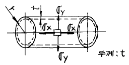
- 1/2
- 2
- 4
- 1/4
(정답률: 알수없음)
3. 보의 전 길이에 걸쳐 균일 분포하중이 작용하고 있는 단순보와 양단이 고정된 양단 고정보에서 중앙에서의 처짐량의 비는?
- 2:1
- 3:1
- 4:1
- 5:1
(정답률: 알수없음)
4. 길이가 ℓ = 6 m인 단순보 위에 균일 분포하중 ω = 2000 N/m가 작용하고 있을 때 최대굽힘 모멘트의 크기는?
- 7000 N·m
- 8000 N·m
- 9000 N·m
- 10000 N·m
(정답률: 알수없음)
5. 사각형 단면의 전단응력 분포에 있어서 최대 전단응력은 전단력을 단면적으로 나눈 평균 전단응력 보다 얼마나 더 큰가?
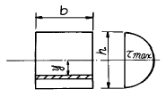
- 30 %
- 40 %
- 50 %
- 60 %
(정답률: 알수없음)
6. 지름 6 mm인 강철선 150 m가 수직으로 매달려 있을 때 자중에 의한 처짐량은 몇 mm 인가? (단, E = 200 GPa, 강철선의 비중량은 7.7x104 N/m3)
- 3.02
- 3.17
- 3.58
- 4.33
(정답률: 알수없음)
7. 길이가 3 m인 원형 단면축의 지름이 20 mm 일 때 이 축이 비틀림 모멘트 100 N.m를 받는다면 비틀어진 각도는? (단, 전단탄성계수 G = 80 GPa 이다.)
- 0.24°
- 0.52°
- 4.56°
- 13.7°
(정답률: 알수없음)
8. 그림과 같이 집중하중 P를 받는 외팔보가 있다. 모멘트 선도가 그림과 같을 때 B점에서의 처짐은? (단, E는 탄성계수, Ⅰ는 단면 2차 모멘트이다.)
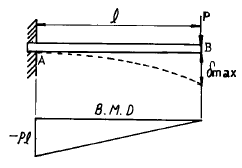
- 2Pℓ3/3EI
- Pℓ3/EI
- Pℓ3/6EI
- Pℓ3/3EI
(정답률: 알수없음)
9. 다음과 같은 부재의 온도를 ΔT만큼 증가시켰을 때, 부재 내에 발생하는 응력은? (단, 탄성계수는 E, 열팽창계수는 α이다.)
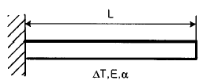
- 0
- αΔT
- EαΔT
- ΔTL/AE
(정답률: 알수없음)
10. 그림과 같은 두 개의 판재가 볼트로 체결된 채 500 N의 인장력을 받고있다. 볼트의 중간단면에 작용하는 평균 전단응력은? (단, 볼트의 지름은 1 cm이다.)
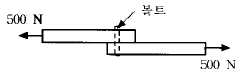
- 5.25 MPa
- 6.37 MPa
- 7.43 MPa
- 8.76 MPa
(정답률: 알수없음)
11. 공학적 변형률(engineering strain) e와 진변형률(true strain) ε 사이의 관계식으로 맞는 것은?
- ε = ln(e+1)
- ε = eln(e)
- ε = ln(e)
- ε = 3e
(정답률: 알수없음)
12. 바깥지름 d, 안지름 d/3인 중공원형 단면의 굽힘에 대한 단면계수는?
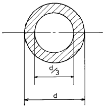
- 5πd3/9
- 5πd3/81
- 5πd3/162
- 5πd3/324
(정답률: 알수없음)
13. 길이 90 cm, 지름 8 cm의 외팔보의 자유단에 2 kN의 집중하중이 작용하는 동시에 150 N・m의 비틀림 모멘트도 작용할때 외팔보에 작용하는 최대 전단응력은 몇 MPa 인가?
- 15
- 16
- 17
- 18
(정답률: 알수없음)
14. 그림과 같이 하중 P가 작용할 때 스프링의 변위 δ 는? (이때 스프링 상수는 k 이다.)
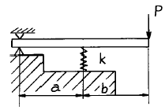
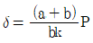
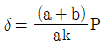
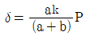
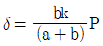
(정답률: 알수없음)
15. 길이가 60 ㎝이고 단면이 1 ㎝ x 1 ㎝인 알미늄 봉에 인장하중 P = 10 kN이 걸리면 인장하중에 의해 늘어난 길이는? (단, 알루미늄의 E = 20 GPa)
- 1.5 mm
- 3 mm
- 6 mm
- 2 mm
(정답률: 알수없음)
16. 지름 30 mm의 원형 단면이며, 길이 1.5 m인 봉에 85 kN의 축방향 하중이 작용된다. 탄성계수 E = 70 GPa, 프와송비 ν= 1/3일 때, 체적증가량의 근사값은 몇 ㎣인가?
- 30
- 60
- 300
- 600
(정답률: 알수없음)
17. 길이가 50 mm 인 원형단면의 철강재료를 인장하였더니 길이가 54 mm 로 신장되었다. 이 재료의 변형률은?
- 0.4
- 0.8
- 0.08
- 1.08
(정답률: 알수없음)
18. 다음 그림과 같은 균일 단면환봉이 축방향에 하중을 받고 평형이 되어 있다. Q=3P가 되려면 W는 얼마인가?
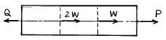
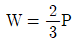
- W=3P
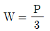
- W=2P
(정답률: 알수없음)
19. 다음 중 체적계수(bulk modulus)를 나타낸 식은? (단, E는 탄성계수, G는 전단탄성계수, ν는 포아송비이다.)
- E/3(1-2ν)
- E/2(1+ν)
- G/2(1+ν)
- (1-2ν)(1+ν)/E
(정답률: 알수없음)
20. 직경이 d인 짧은 환봉(丸棒)의 축방향에서 P인 편심 압축하중이 작용할 때 단면상에서 인장 응력이 일어나지 않는 a의 범위는?
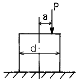
- 반경이 d/8 인 원내에
- 반경이 d/8 인 원밖에
- 반경이 d/4 인 원내에
- 반경이 d/4 인 원밖에
(정답률: 알수없음)
2과목: 기계열역학
21. 증기터빈 발전소에서 터빈 입출구의 엔탈피 차이는 130kJ/kg이고 터빈에서의 열손실은 10 kJ/kg이었다. 이 터빈에서 얻을 수 있는 최대 일은 얼마인가?
- 10 kJ/kg
- 120 kJ/kg
- 130 kJ/kg
- 140 kJ/kg
(정답률: 알수없음)
22. 상온의 감자를 가열하여 뜨거운 감자로 요리하였다. 감자의 에너지 변동 중 맞는 것은?
- 위치에너지가 증가
- 엔탈피 감소
- 운동에너지 감소
- 내부에너지가 증가
(정답률: 알수없음)
23. 일정한 토크 100 Nm가 걸린 상태에서 회전하는 축이 있다이 축을 50 회전시키는데 필요한 일은 얼마인가?
- 5.0 kW
- 5.0 kJ
- 31.4 kW
- 31.4 kJ
(정답률: 알수없음)
24. 기체혼합물의 체적분석결과가 아래와 같을 때 이 데이터로부터 혼합물의 질량기준 기체상수(kJ/kg∙K)를 구하면? (단, 일반기체상수
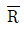
=8.314 kJ/kmol∙K 이고, 원자량은 C= 12, O= 16, N = 14이다.)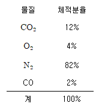
- 0.2764
- 0.3325
- 0.4628
- 0.5716
(정답률: 알수없음)
25. 온도가 150 ℃ 인 공기 3 kg 이 정압 냉각되어 엔트로피가 1.063 kJ/K 만큼 감소되었다. 온도 20 ℃ 인 공기로 방출시켜야 할 열량은 몇 kJ 인가? (단, 공기의 정압비열은 1.01 kJ/kg∙℃ 이다.)
- 379.4
- 715.0
- 27.2
- 538.7
(정답률: 알수없음)
26. 어떤 냉장고에서 질량유량 80 kg/hr 의 냉매 R-134a 가 17kJ/kg 의 엔탈피로 증발기에 들어가 엔탈피 36 kJ/kg 가 되어 나온다. 이 냉장고의 용량은?
- 1220 kJ/hr
- 1800 kJ/hr
- 1520 kJ/hr
- 2000 kJ/hr
(정답률: 알수없음)
27. 폐쇄계 내에 있는 포화액을 그 압력을 일정하게 유지하면서 열을 가하여 포화증기로 만들 경우 다음 사항 중 틀린 것은?
- 온도가 증가한다.
- 건도가 1 이 된다.
- 비체적이 증가한다.
- 내부에너지가 증가한다.
(정답률: 알수없음)
28. 10 냉동톤의 능력을 갖는 카르노 냉동기의 응축 온도가 25℃, 증발 온도가 -20℃ 이다. 이 냉동기를 운전하기 위하여 필요한 이론 동력은 몇 kW 인가? (단, 1 냉동톤은 3.85kW 이다.)
- 6.85
- 4.65
- 2.63
- 1.37
(정답률: 알수없음)
29. 다음 상태량 중에서 강성적 상태량이 아닌 것은?
- 온도
- 비체적
- 압력
- 내부에너지
(정답률: 알수없음)
30. 온도 5℃ 와 3 ℃ 사이에서 작동되는 냉동기의 최대 성능 계수는?
- 10.3
- 5.3
- 7.3
- 9.3
(정답률: 알수없음)
31. 수은의 비중량과 밀도는 각각 대략 얼마인가?
- 13600 kg/m3, 133000 N/m3
- 133000 N/m3, 13600 kg/m3
- 13600 N/m3, 133000 kg/m3
- 133000 kg/m3, 13600 N/m3
(정답률: 알수없음)
32. 이상기체 1 kg 을 300 K, 100 kPa 에서 500 K 까지 "PVn= 일정" 의 과정(n =1.2)을 따라 변화시켰다. 기체의 비열비는 1.3, 기체 상수는 0.287 kJ/kg∙K 라고 가정한다. 이 기체의 엔트로피 변화량은?
- -0.244 kJ/K
- -0.287 kJ/K
- -0.344 kJ/K
- -0.373 kJ/K
(정답률: 알수없음)
33. 이상 냉동 사이클의 자료가 다음과 같을 때 이 사이클의 성능계수(COP)는?
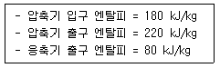
- 2.20
- 2.50
- 2.75
- 3.50
(정답률: 알수없음)
34. 효율이 85 % 인 터빈에 들어갈 때의 증기의 엔탈피가 3390kJ/kg 이고, 가역 단열과정에 의해 팽창할 경우에 출구에 서의 엔탈피가 2135 kJ/kg 이 된다고 한다. 운동에너지의 변화를 무시할 경우 이 터빈의 실제 일은 몇 kJ/kg 인가?
- 1476
- 1255
- 1067
- 906
(정답률: 알수없음)
35. 열과 일에 대한 설명 중 맞는 것은?
- 열과 일은 경계현상이 아니다.
- 열과 일의 차이는 내부에너지만의 차이로 나타난다.
- 열과 일은 항상 양의 수로 나타낸다.
- 열과 일은 경로에 따라 변한다.
(정답률: 알수없음)
36. 다음 설명 중 틀린 것은?
- 오토사이클의 효율은 압축비(compression ratio)의 함수이다
- 오토사이클은 전기점화 내연기관의 기본이 되는 이상적인 사이클이다.
- 디젤사이클은 압축점화 내연기관의 기본이 되는 이상적인 사이클이다.
- 동일한 압축비에 대해서 디젤 사이클의 효율이 오토사이클의 효율보다 크다.
(정답률: 알수없음)
37. 물질이 액체에서 기체로 변해 가는 과정 중 포화에 관련 된 다음 설명 중 잘못된 것은?
- 물질의 포화 온도는 주어진 압력 하에서 그 물질의 증발이 일어나는 온도이다.
- 물질의 포화 온도가 올라가면 포화 압력도 올라간다.
- 액체의 온도가 현재 압력에 대한 포화 온도보다 낮은 때 그 액체를 압축 액체 또는 과냉 액체라 한다.
- 어떤 물질이 포화 온도 하에서 일부는 액체로 그리고 일부는 증기로 존재할 때, 전체 질량에 대한 액체 질량의 비를 건도로 정의한다.
(정답률: 알수없음)
38. 이상기체의 내부에너지 및 엔탈피는?
- 압력만의 함수이다.
- 체적만의 함수이다.
- 온도만의 함수이다.
- 온도 및 압력의 함수이다.
(정답률: 알수없음)
39. 실린더 내의 공기가 200 kPa, 10℃ 상태에서 600 kPa 이 될 때까지 "PV1.3 = 일정" 인 과정으로 압축된다. 공기의 질량이 3 kg 이라면 이 과정 중 공기가 한 일은?
- -23.5 kJ
- -235 kJ
- 12.5 kJ
- 125 kJ
(정답률: 알수없음)
40. 1 kg 의 헬륨이 1 atm 하에서 정압가열 되어 온도가 300K에서 350K 로 변하였을 때, 엔트로피(entropy)의 변화량은 몇 kJ/㎏∙K 인가? (단, h = 5.238 T 의 관계를 갖는다. h의 단위는 kJ/kg, T 의 단위는 K 이다.)
- 0.694
- 0.756
- 0.807
- 0.968
(정답률: 알수없음)
3과목: 기계유체역학
41. 원통수조 속에 넣은 물을 원통과 함께 연직 중심축을 중심으로 ω의 등각속도로 회전 운동시킬 때 반지름 r 인 곳의 수면은 연직 중심 축에서의 수면 보다 얼마만큼 더 높은가?
- ω2r/2g
- ω2r2/2g
- ωr2/2g
- ωr/2g
(정답률: 알수없음)
42. 밀도가 800 kg/m3인 유체 내에서 소리의 전파속도가 800m/s 라면 이 유체의 체적 탄성계수(bulk modulus)는?
- 640 kPa
- 800 kPa
- 512 MPa
- 410 GPa
(정답률: 알수없음)
43. 다음 중 비압축성 유동에 해당하는 것은?
- u=x2-y2, v=2xy
- u=2xy-x2, v=xy-y2
- u=xt+2y2, v=xt3-yt
- u=(x+y)xt, v=(2x-y)yt
(정답률: 알수없음)
44. 최고 6 m/s 의 속도로 공기 0.25 kg/s (질량유량)를 흐르도록 하는데 필요한 최소 관지름은 몇 m 인가? (단, 공기는 27℃ 로서 기체상수는 287N·m/kg·K 이며, 2.3 x 105 Pa 의 절대압력 상태에 있다.)
- 0.14
- 1.4
- 0.0156
- 0.156
(정답률: 알수없음)
45. 질량보존의 법칙을 유체에 적용하여 얻어지는 방정식은?
- 연속 방정식
- 운동 방정식
- 베르누이 방정식
- 에너지 방정식
(정답률: 알수없음)
46. 수평원관(圓管)내에서 유체가 층류유동 할 때의 유량은?
- 압력강하에 반비례한다.
- 지름의 4승에 반비례한다.
- 점성계수에 반비례한다.
- 관의 길이에 비례한다.
(정답률: 알수없음)
47. 점성을 지닌 액체가 지름 4mm의 수평으로 놓인 원통형 튜브를 12 x 10-6m3/s 의 유량으로 흐르고 있다. 길이 1 m에서의 압력강하는 몇 kPa 인가? (단, 튜브의 입구로부터 충분히 멀리 떨어져 있어서 유체는 축방향으로만 흐르며 유체의 밀도와 점성계수는 ρ=1.18×103 kg/m3, μ=0.0045 N· s/m2 이다.)
- 7.59
- 8.59
- 9.59
- 10.59
(정답률: 알수없음)
48. 동쪽을 x축 방향, 북쪽을 y축 방향으로 하는 2차원 직각 좌표계에서 2 m/s의 일정한 속도로 불어오는 동남풍에 대응하는 속도 포텐셜은?
- √2 x + √2 y + 상수
- -√2 x + √2 y + 상수
- 2x - 2y + 상수
- 2x + 2y + 상수
(정답률: 알수없음)
49. 비중 0.8 인 알콜이 든 U 자관 압력계가 있다. 이 압력계의 한 끝은 피토(pitot)관의 전압부(全壓部)에 다른 끝은 정압부(靜壓部)에 연결하여 피토관으로 기류의 속도를 재려고 한다. U 자관의 읽음의 차가 78.8 mm, 대기압력이 1.0266 x 105Pa abs, 온도 21 ℃ 일 때 기류의 속도는? (단, 기체상수 R = 287 N∙m/kg∙K)
- 38.8 m/s
- 27.5 m/s
- 43.5 m/s
- 31.8 m/s
(정답률: 알수없음)
50. 지름 200 mm 인 곧은 주철관 속을 0.1m33/s 의 기름이 흐르고 있다. 관의 길이가 100 m 일 때 손실수두는 몇 m 인가? (단, 기름의 동점성계수는 0.7 x 10-5m2/s 이고, 관마찰계수는 0.0234 이다.)
- 6.0
- 7.0
- 8.0
- 9.0
(정답률: 알수없음)
51. 안지름 1cm 의 원관내를 유동하는 0℃ 의 물의 층류 임계 속도는 약 몇 cm/s 인가? (단, 0℃ 인 물의 동점성계수는 0.01794cm2/s 이다.)
- 0.38
- 3.8
- 38
- 380
(정답률: 알수없음)
52. 몸무게가 750 N 인 조종사가 지름 5.5 m 의 낙하산을 타고 비행기에서 탈출하고 있다. 항력계수가 1.0 이고, 낙하산의 무게를 무시한다면 조종사의 최대 종속도는 약 몇 m/s가 되는가? (단, 공기의 밀도는 1.2 kg/m3이다.)
- 7.26
- 8
- 5.26
- 10
(정답률: 알수없음)
53. 속도 3 m/s 로 움직이는 평판에 이것과 같은 방향으로 수직으로 10 m/s 의 속도를 가진 제트가 충돌한다. 분류가 평판에 미치는 힘 F 는 얼마인가? (단,유체의 밀도를 ρ라 하고 제트의 단면적을 A라 한다.)
- F = 10ρA
- F = 100ρA
- F = 7ρA
- F = 49ρA
(정답률: 알수없음)
54. 깊이가 10 cm 이고 직경이 6 cm 인 물컵에 정지 상태에서 7 cm 의 물이 담겨있다. 이 컵을 회전반 위의 중심축에 올려놓고 회전시켜 물이 넘치게 될 때 회전반의 각속도는 몇 rad/s 인가? (단, 물의 밀도는 1000 kg/m3이다.)
- 345
- 36.2
- 72.4
- 690
(정답률: 알수없음)
55. 어느 문제에 관련되는 차원상수를 포함하는 측정량이 8개이다. 기본단위의 개수가 4개이면 무차원량의 수는?
- 2
- 3
- 4
- 8
(정답률: 알수없음)
56. 난류에서 평균 전단응력과 평균 속도구배의 비를 나타내는 점성계수는?
- 유동의 혼합 길이와 평균 속도 구배의 함수이다.
- 유체의 성질이므로 온도가 주어지면 일정한 상수이다
- 뉴튼의 점성법칙으로 구한다.
- 임계 레이놀즈수를 이용하여 결정한다.
(정답률: 알수없음)
57. 어떤 기름의 점성계수 μ가 1.6 x 10-2N · s/m2이고 밀도 ρ는 800 kg/m3이다. 이 기름의 동점성계수 ν는 몇 m2/s인가?
- 2.0 × 10-2
- 2.0 × 10-3
- 2.0 × 10-4
- 2.0 × 10-5
(정답률: 알수없음)
58. 점성 계수 1 Poise 와 같은 것은?
- 1 dyne/cm∙s
- 1 N∙s2/m
- 1 dyne∙s/cm2
- 1 cm2/s
(정답률: 알수없음)
59. 물 위를 3 m/s 의 속도로 항진하는 길이 2 m 인 모형선에 작용하는 조파저항이 54 N 이다. 길이 50 m 인 실선을 이것과 상사한 조파상태인 해상에서 항진시킬 때 조파 저항은 약 얼마가 생기는가? (단, 해수의 비중량은 γp = 10075 N/m3)
- 867 N
- 8825 N
- 86 kN
- 867 kN
(정답률: 알수없음)
60. 그림과 같이 용기 안에 물(밀도 ρw = 1000 kg/m3), 기름 (밀도 ρoil = 800 kg/m3), 공기(압력 Pa = 200 kPa)가 들어 있다. 점 A 에서의 압력은 몇 kPa 인가?
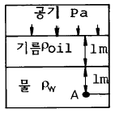
- 218
- 290
- 400
- 380
(정답률: 알수없음)
4과목: 농업동력학
61. 측정거리 20 m 를 트랙터의 무부하시는 차륜 회전수가 8.5, 부하시는 차륜 회전수가 10 이었다면, 이 트랙터의 슬립율은 얼마인가?
- 12.9 %
- 13.5 %
- 14.9 %
- 17.6 %
(정답률: 알수없음)
62. 앞바퀴의 직진성을 좋게 하기 위하여 앞바퀴 앞쪽의 간격을 뒷쪽보다 좁게 하여 바퀴가 안으로 향하도록 한 것은?
- 캐스터 각
- 캠버각
- 킹핀 경사각
- 토우 인
(정답률: 알수없음)
63. 다음은 디젤기관 노크에 대한 설명이다. 잘못된 것은?
- 연료의 세탄가는 노크에 견디는 성질의 척도이다.
- 연소 후기에 발생하며 항상 어느 정도 존재할 수밖에 없다.
- 연료의 착화지연이 길수록 발생하기 쉽다.
- 보통점도를 갖는 연료의 물리적 착화지연은 화학적인 것보다 짧다.
(정답률: 알수없음)
64. 연약지에서 트랙터 차륜이 공회전하여 주행이 곤란할 때 구동차축을 일체로 고정시켜주는 장치는?
- 동기장치
- 차동 잠금장치
- 동력 취출장치
- 유니버설조인트
(정답률: 알수없음)
65. 기관의 냉각수 온도를 일정하게 유지하기 위하여 자동적으로 작동하는 밸브에 의해 수온을 자동조절하는 장치는?
- 냉각 팬 (cooling fan)
- 물 펌프(water pump)
- 서모스탯(thermostat)
- 라디에이터 캡(radiator cap)
(정답률: 알수없음)
66. 트랙터 3점 링크 중 하부 링크의 좌우 진동을 제한하는 것은?
- 체크 체인
- 리프트 암(lift arm)
- 상부 링크
- 리프팅 로드(lifting rod)
(정답률: 알수없음)
67. 디젤기관을 탑제한 트랙터에 사용하는 일반적인 축전지를 구성하고 있는 하나의 셀(cell)은 약 몇 V 의 전압을 발생 하는가?
- 2.0
- 6.0
- 12.0
- 24.0
(정답률: 알수없음)
68. 가솔린 기관에 이용되는 기본 사이클은?
- 오토 사이클(Otto Cycle)
- 디젤 사이클(Diesel Cycle)
- 카르노 사이클(Carnot Cycle)
- 사바테 사이클(Sabathe Cycle)
(정답률: 알수없음)
69. 트랙터 주행속도가 3 m/sec 일 때 구동륜에 걸리는 하중이 200 kgf, 실제 견인력이 100 kgf 이며, 이 때 엔진 출력을 측정한 결과 10 PS 이면, 트랙터의 견인계수(Kt)와 견인효율(Et)은?
- Kt = 25%, Et = 40%
- Kt = 25%, Et = 80%
- Kt = 50%, Et = 80%
- Kt = 50%, Et= 40%
(정답률: 알수없음)
70. 후륜구동 트랙터의 하중전이에 관한 설명 중 옳은 것은?
- 하중전이는 트랙터의 견인성능을 증가시킨다.
- 하중전이는 동적 상태에서 차륜에 작용하는 지면반력과 크기가 같다.
- 하중전이는 전륜의 추진력을 증가시키고 후륜의 운동저항을 감소시킨다.
- 하중전이의 크기가 후륜의 정하중과 같게 되면 후방 전도가 일어나기 쉽다.
(정답률: 알수없음)
71. 트랙터 작업기의 부착방식에서 견인식과 비교한 직접장착식의 특징 설명으로 틀린 것은?
- 작업기의 유압 제어가 어렵다.
- 작업기의 선회가 용이하다.
- 구조가 비교적 간단하다.
- 회전 반경이 작다.
(정답률: 알수없음)
72. 3 상 유도전동기의 극수가 4 이고, 슬립이 없을 때 이 전동기의 동기속도는? (단, 전원의 주파수는 60 Hz 이다.)
- 1500 rpm
- 1800 rpm
- 2100 rpm
- 2400 rpm
(정답률: 알수없음)
73. 무부하시 1시간에 1200 m 를 주행하는 트랙터가, 작업기를 장착하고 쟁기작업을 할 때의 속도가 5.5 m/min 이면, 이때 진행 저하율은?
- 72.5 %
- 27.5 %
- 19.9 %
- 14.5 %
(정답률: 알수없음)
74. 실린더의 전체적이 1200cc 이고, 행정체적이 950cc 인 엔진의 압축비는 얼마인가?
- 1.26
- 2.8
- 4.8
- 7.9
(정답률: 알수없음)
75. 엔진의 회전수가 1800 rpm, 엔진쪽 풀리 지름이 21 ㎝ 일 때 작업기의 회전수를 600 rpm 으로 맞추려면 작업기쪽 풀리의 지름은 몇 cm 로 하여야 하는가?
- 7
- 21
- 63
- 84
(정답률: 알수없음)
76. 다음 중 유압회로내의 압력이 일정한 수준에 도달하면 유압펌프를 무부하 시키는데 사용되는 제어 밸브는?
- 릴리프 밸브 (relief valve)
- 부하제거 밸브 (unloading valve)
- 유량제어 밸브 (flow control valve)
- 방향제어 밸브 (direction control valve)
(정답률: 알수없음)
77. 축전지를 전원으로 이용하는 차량의 시동 전동기로 다음 중 가장 적합한 전동기는?
- 직권 직류전동기
- 분권 직류전동기
- 단상 유도전동기
- 농형 유도전동기
(정답률: 알수없음)
78. 다음은 터보 과급기에 대한 설명이다. 잘못된 것은?
- 체적효율이 100 % 이상이 될 수도 있다.
- 내부 냉각기는 공기를 냉각하기 위한 것이다.
- 조속기 최대속도에서 가장 효율적이다.
- 기관이 전부하 운전될 때 과급효과가 크다.
(정답률: 알수없음)
79. 다음 중 연료 분사압력이 가장 높은 디젤기관의 연소실 형식인 것은?
- 공기실식
- 와류실식
- 직접분사식
- 예연소실식
(정답률: 알수없음)
80. 일정한 작업 간격이 필요한 파종기나 이식기를 트랙터에 부착할 경우 다음 중 가장 적합한 동력취출장치는?
- 독립형
- 상시 회전형
- 속도비례형
- 변속기 구동형
(정답률: 알수없음)
5과목: 농업기계학
81. 자탈형 콤바인의 주요 구성부에 해당되지 않는 것은?
- 결속부
- 전처리부 및 예취부
- 반송부
- 탈곡부
(정답률: 알수없음)
82. 2차경(2次耕)은 1차경(1次耕)이 실시된 다음에 시행하는 경운작업이다. 다음 중 2차경이 아닌 것은?
- 파종작업
- 쇄토작업
- 균평작업
- 중경제초작업
(정답률: 알수없음)
83. 500 kgf 의 현미를 정미기에 투입하여 460 kgf 의 정백미를 얻었다면, 정백수율은?
- 90 %
- 92 %
- 95 %
- 96 %
(정답률: 알수없음)
84. 미스트기의 살포방법 중 독성이 높은 약제를 살포할 경우 가장 적합한 작업 방법인 것은?
- 전진법
- 횡보법
- 후진법
- 대각선법
(정답률: 알수없음)
85. 로터리 모어의 특징을 잘못 설명한 것은?
- 도복상태의 목초를 예취하기가 불가능하다.
- 구조가 간단하고 취급과 조작이 용이하다.
- 지면이 평탄하지 않은 곳에서의 작업은 위험하다.
- 고속으로 회전하는 칼날을 이용하여 목초를 절단한다.
(정답률: 알수없음)
86. 흙 속의 공극의 정도인 공극률을 나타낸 식은? (단, V 는 흙 전체의 체적, Vs는 토양 알갱이의 체적, Va는 공기의 체적, Vv는 공극의 체적이다.)
- Va/V x 100(%)
- Vv/V x 100(%)
- Va/Vs x 100(%)
- Va/Vv x 100(%)
(정답률: 알수없음)
87. 벨트 컨베이어의 특징 설명으로 틀린 것은?
- 재료의 연속적 이송이 가능
- 재료의 수직이동이 가능
- 수평 및 경사 이동에 적합
- 표면 마찰계수가 큰 물질을 이송하는데 적합
(정답률: 알수없음)
88. 곡물에 금이 가거나 파열이 생기는 등의 물리적 손상을 방지하기 위한 건조 방법이 아닌 것은?
- 건조 온도를 낮춘다.
- 가열된 곡물을 신속히 식힌다.
- 일정량의 수분을 서서히 제거한다.
- 건조 온도가 높은 때는 습도가 높은 공기를 사용한다
(정답률: 알수없음)
89. 한줄에 일정한 간격으로 1 ~ 3개의 종자를 파종하는 방법으로 옥수수, 콩류 등의 종자 파종에 적합한 파종법은?
- 점파
- 산파
- 연파
- 조파
(정답률: 알수없음)
90. 벼의 길이가 7.09 × 10-3m, 폭이 3.06 × 10-3m, 두께가 1.98 × 10-3m 일 때, 이 곡립의 체적이 26.6 × 10-9m3이면 이 벼의 구형률은 얼마인가?
- 27.93 %
- 38.59 %
- 43.16 %
- 52.24 %
(정답률: 알수없음)
91. 곡물 선별기의 종류별 특성 설명으로 틀린 것은?
- 스크린 선별기는 곡물의 두께, 길이, 폭, 지름 또는 모양을 이용한다.
- 홈 선별기는 곡물 입자길이의 차이를 이용한다.
- 기류 선별기는 크기나 무게는 비슷하나 비중이 다른 이물질을 분리한다.
- 광학적 선별기는 빛을 이용하여 크기, 표면 빛깔, 내부 품질 등을 판별한다.
(정답률: 알수없음)
92. 현미기의 고속 및 저속 롤러의 지름이 같고, 회전수가 각 각 1200 및 900 rpm 일 때 회전차율(回轉差率)은?
- 14.3 %
- 25 %
- 33.3 %
- 75 %
(정답률: 알수없음)
93. 고정되어 있어서 이앙작업 중 조절하기 어려운 것은?
- 작업 속도
- 식부 조간거리
- 주간 간격
- 식부날 회전속도
(정답률: 알수없음)
94. 동력 분무기의 공기실이 하는 가장 주된 역할인 것은?
- 흡입 압력을 일정하게 유지하여 준다.
- 약액의 흡입량을 일정하게 유지하여 준다.
- 약액의 배출량을 일정하게 유지하여 준다.
- 약액 속에 공기를 혼입시킨다.
(정답률: 알수없음)
95. 다음 중 몰드보드(mold board) 플라우에 작용하는 주요 토양 저항력이 아닌 것은?
- 보습 밑 콜터의 역토 절단저항
- 몰드보드위에서 역토의 가속력
- 역토의 전단 및 비틀림에 의한 변형저항
- 지측판의 측면과 역토사이의 마찰 저항력
(정답률: 알수없음)
96. 벼, 밀, 콩 등의 혼합물을 곡물별로 분리시키려 할 경우 다음 중 가장 적합한 선별기는?
- 체 선별기
- 원판형 홈선별기
- 마찰 선별기
- 원통형 공기 선별기
(정답률: 알수없음)
97. 다음 분쇄방법 중 분쇄기에 공급된 일정량의 원료가 모두 분쇄된 다음 다시 원료를 투입하여 분쇄하는 방법은?
- 회분 분쇄
- 개회로 분쇄
- 폐회로 분쇄
- 건식 분쇄
(정답률: 알수없음)
98. 탈곡기에서 급동의 크기와 회전수의 변화가 탈곡작업에 미치는 영향 설명으로 틀린 것은?
- 급동의 지름이 너무 작으면 검불이나 짚이 많이 감긴다.
- 급동의 지름이 너무 크면 탈곡이 잘 되나 진동을 일으키기 쉽고 소요동력이 증대된다.
- 급동의 회전수가 증가할수록 탈립이 잘 되나 곡립 손상도 증가된다.
- 급동의 적정 회전수로 부터 감소하면 곡립 손상은 증가되나 탈립작용은 양호해진다.
(정답률: 알수없음)
99. 인력 분무기에는 없고 동력 분무기에만 있는 것은?
- 펌프
- 공기실
- 노즐
- 압력조절장치
(정답률: 알수없음)
100. 플라우에서 직접 토양을 절삭하는 부분은?
- 보습(share)
- 발토판(moldboard)
- 지측판(landside)
- 결합판(frog)
(정답률: 알수없음)
U = (1/2) * (Tθ)^2 / G * V
여기서 T는 비틀림모멘트, θ는 비틀림각도, G는 전단 탄성계수, V는 봉의 부피이다.
봉의 부피 V는 다음과 같이 구할 수 있다.
V = (1/4) * π * D^2 * ℓ
여기서 D는 봉의 지름, ℓ은 봉의 길이이다.
따라서 U는 다음과 같이 구할 수 있다.
U = (1/2) * (Tθ)^2 / G * (1/4) * π * D^2 * ℓ
비틀림각도 θ는 T, G, D, ℓ에 의존하지 않으므로 상수로 취급할 수 있다. 따라서 U는 다음과 같이 간단하게 표현할 수 있다.
U = (1/2) * θ^2 / G * T^2 * V
U = (1/2) * θ^2 / G * T^2 * (1/4) * π * D^2 * ℓ
U = 16T^2ℓ / GπD^4
따라서 정답은 "16T^2ℓ/GπD^4"이다.